The proteins in all living species, from bacteria to humans, are constructed from the same set of 20 amino acidsA molecule that contains an amino group and a carboxyl group., so called because each contains an amino group attached to a carboxylic acid. (For more information about amino groups, see Chapter 15 "Organic Acids and Bases and Some of Their Derivatives", Section 15.1 "Functional Groups of the Carboxylic Acids and Their Derivatives".) The amino acids in proteins are α-amino acids, which means the amino group is attached to the α-carbon of the carboxylic acid. (For more information about the α-carbon, see Chapter 15 "Organic Acids and Bases and Some of Their Derivatives", Section 15.2 "Carboxylic Acids: Structures and Names".) Humans can synthesize only about half of the needed amino acids; the remainder must be obtained from the diet and are known as essential amino acidsAn amino acid that must be obtained from the diet because it cannot be synthesized in sufficient quantities by the body..
Two more amino acids have been found in limited quantities in proteins. Selenocysteine was discovered in 1986, while pyrrolysine was discovered in 2002.
The amino acids are colorless, nonvolatile, crystalline solids, melting and decomposing at temperatures above 200°C. These melting temperatures are more like those of inorganic salts than those of amines or organic acids and indicate that the structures of the amino acids in the solid state and in neutral solution are best represented as having both a negatively charged group and a positively charged group. Such a species is known as a zwitterionAn electrically neutral compound that contains both negatively and positively charged groups..
In addition to the amino and carboxyl groups, amino acids have a side chain or R group attached to the α-carbon. Each amino acid has unique characteristics arising from the size, shape, solubility, and ionization properties of its R group. As a result, the side chains of amino acids exert a profound effect on the structure and biological activity of proteins. Although amino acids can be classified in various ways, one common approach is to classify them according to whether the functional group on the side chain at neutral pH is nonpolar, polar but uncharged, negatively charged, or positively charged. The structures and names of the 20 amino acids, their one- and three-letter abbreviations, and some of their distinctive features are given in Table 18.2 "Common Amino Acids Found in Proteins".
Table 18.2 Common Amino Acids Found in Proteins
| Common Name | Abbreviation | Structural Formula (at pH 6) | Molar Mass | Distinctive Feature |
|---|---|---|---|---|
| Amino acids with a nonpolar R group | ||||
| glycine | gly (G) |
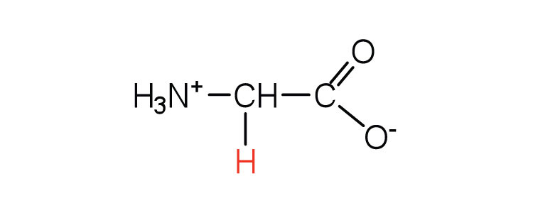
|
75 | the only amino acid lacking a chiral carbon |
| alanine | ala (A) |
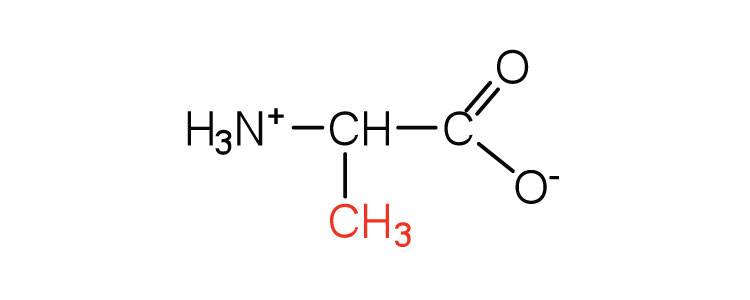
|
89 | — |
| valine | val (V) |
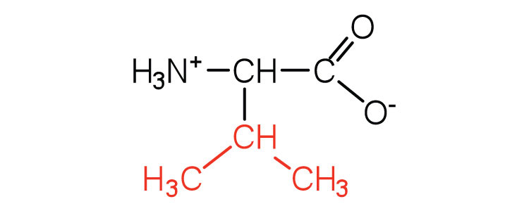
|
117 | a branched-chain amino acid |
| leucine | leu (L) |
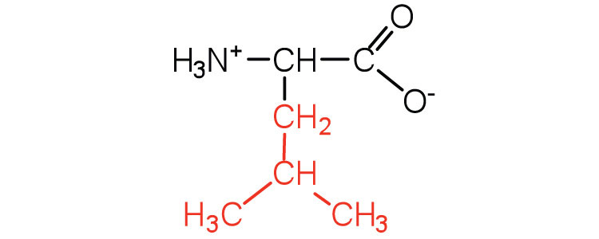
|
131 | a branched-chain amino acid |
| isoleucine | ile (I) |
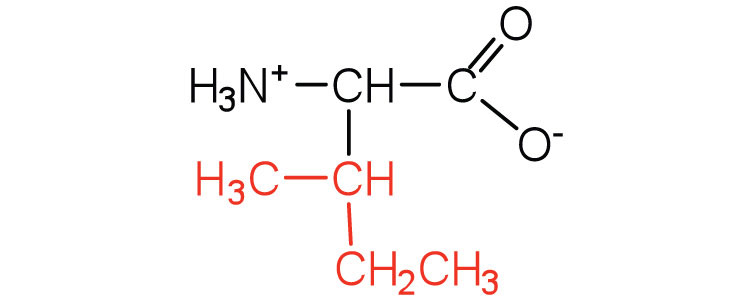
|
131 | an essential amino acid because most animals cannot synthesize branched-chain amino acids |
| phenylalanine | phe (F) |

|
165 | also classified as an aromatic amino acid |
| tryptophan | trp (W) |
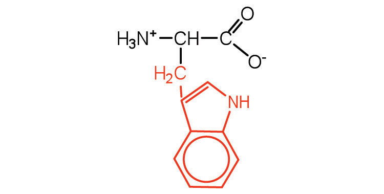
|
204 | also classified as an aromatic amino acid |
| methionine | met (M) |
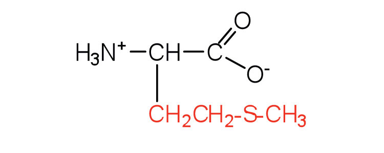
|
149 | side chain functions as a methyl group donor |
| proline | pro (P) |
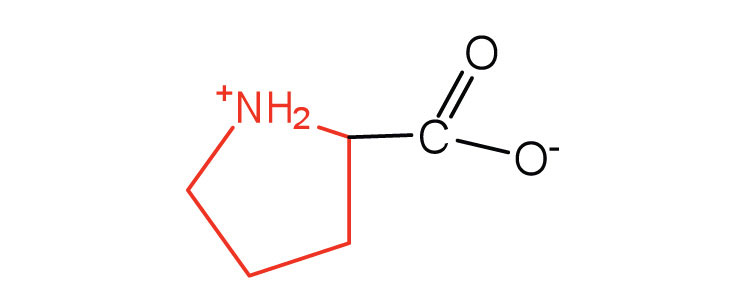
|
115 | contains a secondary amine group; referred to as an α-imino acid |
| Amino acids with a polar but neutral R group | ||||
| serine | ser (S) |
|
105 | found at the active site of many enzymes |
| threonine | thr (T) |
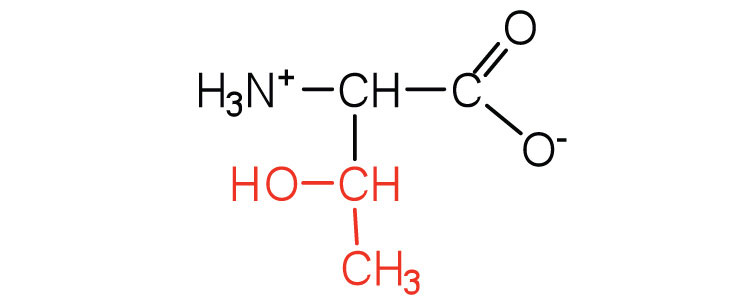
|
119 | named for its similarity to the sugar threose |
| cysteine | cys (C) |
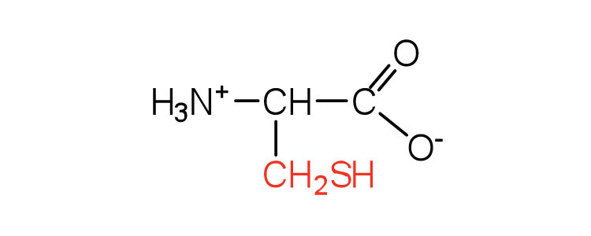
|
121 | oxidation of two cysteine molecules yields cystine |
| tyrosine | tyr (Y) |
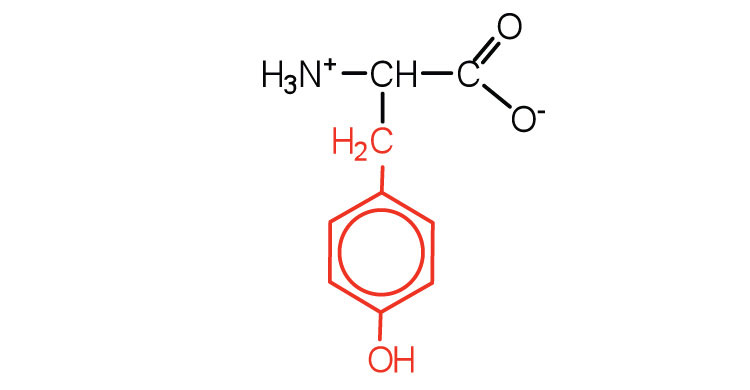
|
181 | also classified as an aromatic amino acid |
| asparagine | asn (N) |
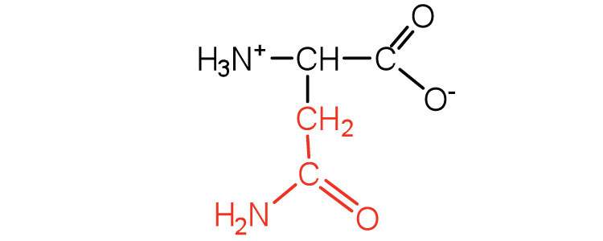
|
132 | the amide of aspartic acid |
| glutamine | gln (Q) |
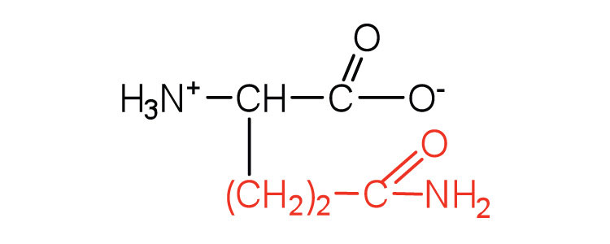
|
146 | the amide of glutamic acid |
| Amino acids with a negatively charged R group | ||||
| aspartic acid | asp (D) |
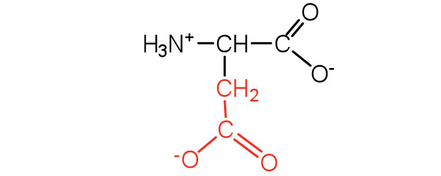
|
132 | carboxyl groups are ionized at physiological pH; also known as aspartate |
| glutamic acid | glu (E) |
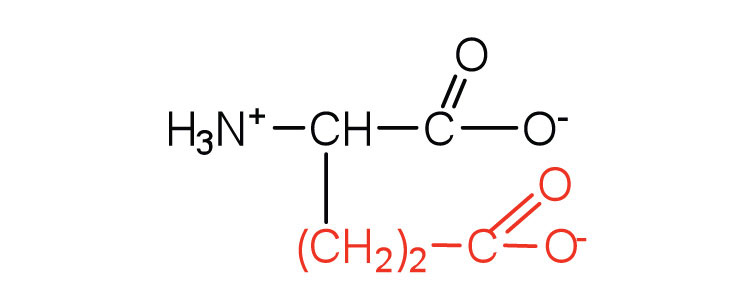
|
146 | carboxyl groups are ionized at physiological pH; also known as glutamate |
| Amino acids with a positively charged R group | ||||
| histidine | his (H) |
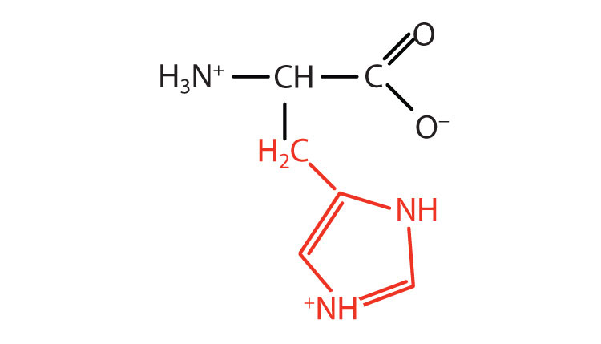
|
155 | the only amino acid whose R group has a pKa (6.0) near physiological pH |
| lysine | lys (K) |
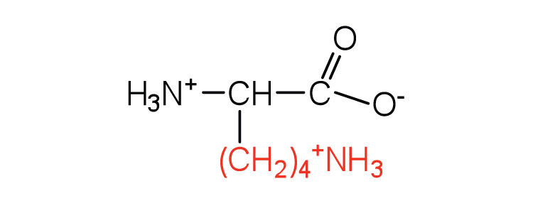
|
147 | — |
| arginine | arg (R) |
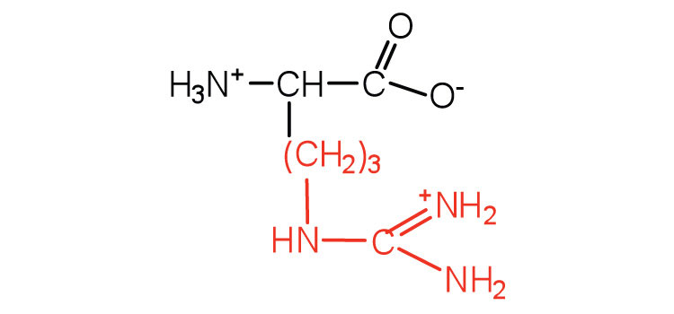
|
175 | almost as strong a base as sodium hydroxide |
The first amino acid to be isolated was asparagine in 1806. It was obtained from protein found in asparagus juice (hence the name). Glycine, the major amino acid found in gelatin, was named for its sweet taste (Greek glykys, meaning “sweet”). In some cases an amino acid found in a protein is actually a derivative of one of the common 20 amino acids (one such derivative is hydroxyproline). The modification occurs after the amino acid has been assembled into a protein.
Notice in Table 18.2 "Common Amino Acids Found in Proteins" that glycine is the only amino acid whose α-carbon is not chiral. Therefore, with the exception of glycine, the amino acids could theoretically exist in either the D- or the L-enantiomeric form and rotate plane-polarized light. As with sugars, chemists use glyceraldehyde as the reference compound for the assignment of configuration to amino acids. (For more information about stereoisomers and configuration, see Chapter 16 "Carbohydrates", Section 16.2 "Classes of Monosaccharides".) Its structure closely resembles an amino acid structure except that in the latter, an amino group takes the place of the OH group on the chiral carbon of the sugar.
We learned in Chapter 16 "Carbohydrates" that all naturally occurring sugars belong to the D series. It is interesting, therefore, that nearly all known plant and animal proteins are composed entirely of L-amino acids. However, certain bacteria contain D-amino acids in their cell walls, and several antibiotics (e.g., actinomycin D and the gramicidins) contain varying amounts of D-leucine, D-phenylalanine, and D-valine.
What is the general structure of an α-amino acid?
Identify the amino acid that fits each description.
Write the side chain of each amino acid.
Write the side chain of each amino acid.
Draw the structure for each amino acid.
Draw the structure for each amino acid.
Identify an amino acid whose side chain contains a(n)
Identify an amino acid whose side chain contains a(n)